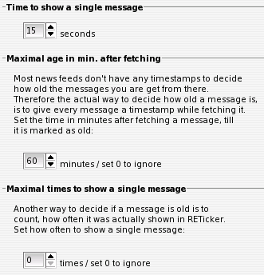

IV.II. Times / Aging of News
Time to show a single message
Hier kann die Zeit angegeben werden, die eine einzelne Nachricht im Ticker angezeigt wird. Danach wird, sofern vorhanden, zur nächsten Nachricht - möglicherweise einer nächsten Quelle - gewechselt.
Maximal age in min. after fetching
Die meisten News-Quellen stellen Nachrichten-Feeds zur Verfügung, welche den einzelnen Nachrichten keine Zeitstempel zuordnen. Um zu entscheiden, wann eine Nachricht veraltet ist, wird darum jede Nachricht beim (ersten) Abholen mit einem Abhol-Zeitstempel versehen. Hier kann nun eingestelt werden, wieviel Minuten nach dem Abholen vergehen dürfen, bis eine Nachricht als nicht mehr aktuell gilt und diese Nachricht nicht mehr im Ticker angezeigt wird.
Maximal times to show a single message
Ein anderer Weg, zu bestimmen, wann einen Nachricht nicht mehr aktuell ist, ist es, die Anzahl ihrer Präsentationen im Ticker zu zählen. Hier kann darum eingestellt werden, wie oft einen Nachricht maximal angezeigt werden soll, bevor sie als nicht mehr aktuell gilt.